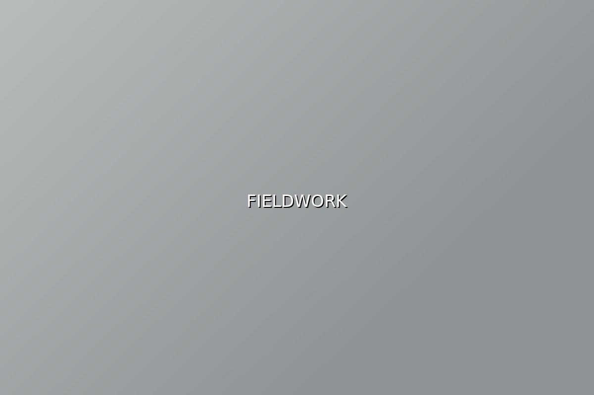
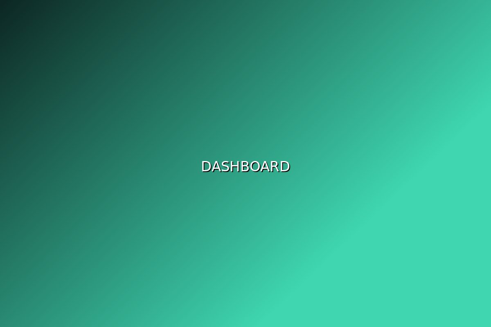

Explore our products
Queue Management
Ticketing and flow control for clinics, banks, and service counters, with live wait times.
Asset Tracker
Know what equipment you own, where it is, and when it is due for replacement.
Field Service Desk
Dispatch, route, and log on-site jobs from one screen that works offline.

Insight Dashboard
Pulls figures from the tools you already run and puts them on one page.
